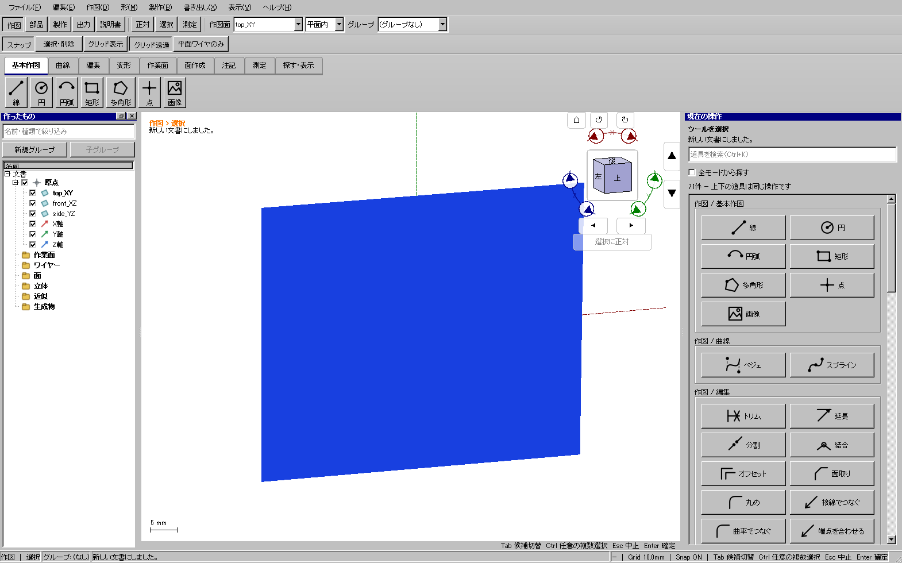

2026-10-25。描画・基礎入出力の計測版 a89dd605c。詳細模型キャッシュの追加修正版 6222e0f05。Windows実機・GTX1060 6GB、2560×1440、表示倍率100%。以前の受入版と同じ12円筒・4992三角形・元解像度画像を使用。Qtの実マウス入力と再描画・合成イベント、GPU完了までを計時した単発比較。各条件4フレームを暖機後16フレーム測定。
画像が1枚見えるだけで全CAD面がCPUラスタライズへ切り替わっていた。画像を元の解像度・配置・三角形のままGPUへ送り、カメラ操作時はテクスチャを再利用する。グリッドや幾何精度を落としていない。色・透明度・前後関係を独立したCPU描画と照合し、画像のみ、変形画像、リサイズ、テクスチャ失敗からの復帰も確認。
読込は表示用メッシュを最大2レーンで準備し、冷読込後の重複したエッジ更新を除去。キャッシュの読込検証は維持し、保存時の一致確認で不要な全展開を避ける。出力は選択・配置が同じならプレビュー形状を再利用し、STEP計算を進捗・取消付きのワーカーへ移した。
| モデル | グリッド | 操作 | 前・中央値ms | 後・中央値ms | 後p95 ms |
|---|---|---|---|---|---|
| cad-only | off | orbit | 16.6785 | 16.6841 | 17.5159 |
| cad-only | off | pan | 16.6387 | 16.8181 | 18.8999 |
| cad-only | major | orbit | 16.6718 | 16.6419 | 18.249 |
| cad-only | major | pan | 17.1376 | 16.7879 | 17.9095 |
| cad-only | subdivision | orbit | 16.7906 | 16.8446 | 18.2676 |
| cad-only | subdivision | pan | 16.967 | 16.9005 | 18.2179 |
| cad-only | near-edge | orbit | 27.2119 | 16.8683 | 21.528 |
| cad-only | near-edge | pan | 16.6873 | 16.6848 | 18.459 |
| image-and-cad | off | orbit | 151.0764 | 17.1216 | 31.128 |
| image-and-cad | off | pan | 151.0928 | 17.0054 | 19.7178 |
| image-and-cad | major | orbit | 156.2052 | 16.6105 | 17.9272 |
| image-and-cad | major | pan | 155.2188 | 17.0037 | 25.4303 |
| image-and-cad | subdivision | orbit | 159.2653 | 16.7408 | 18.6946 |
| image-and-cad | subdivision | pan | 158.476 | 16.5963 | 20.0369 |
| image-and-cad | near-edge | orbit | 59.6726 | 16.7862 | 17.9862 |
| image-and-cad | near-edge | pan | 59.3169 | 16.6736 | 17.5155 |
約17msは60fps付近だが、16.67msを超えるフレームや約31msのスパイクもある。常時60fps達成、全モデル・全GPUで同じ性能とは判定していない。ソフトウェア描画の速度改善は今回のGPU比較に含めない。
原本を保全したコピーで既存画像2枚を表示し、7形状の実モデルを同じQt中ドラッグで比較。移動の中央値（ms）は [('off', 79.93, 20.62), ('major', 77.83, 23.85), ('subdivision', 77.29, 19.13), ('near-edge', 67.73, 17.24)]。グリッド条件はoff / major / subdivision / near-edgeの順。生データはJSONに同梱。
添付115面：初回9227→8096ms、同一キャッシュ1275→1101ms。大規模1085形状：初回25138→21023ms、同一キャッシュ7012→6964ms。大規模モデルの温読込はほぼ同じ。各回キャッシュと一時フォルダーを分離し、原本ハッシュ不変を照合した。
12部品の最終版出力測定：初回捕捉91.68ms、3形式切替合計0.042ms、STEP244.64ms、STL92.47ms。配置変更1回分を含むメッシュ生成24回。形式切替と2回の保存では追加生成0。出力の変更前時間は未測定であり、STEP形式自体の高速化率は主張しない。
追加で150%表示、ソフトウェア描画、offscreenを各12件確認。Qtの実イベントを送る自動操作であり、OSマウスによる手作業と同一とは扱わない。Windows全体195 CTest（skip0）、本体・配布UI各591件、旧CAD自己試験も成功。受入版image-io-accepted-20261025を生成し、入力・実行ファイル・ZIPのハッシュを照合した。

元画像の画素・UVを維持した非平面表示。CPUとの色・深度照合は別の自動ピクセル検査で実施。
改訂模型の計算済みデータは135,919,373 bytes。以前の1件128 MiB（134,217,728 bytes）上限を超え、保存先を作ってもキャッシュ本体は削除されていた。同じキャッシュを指定した旧版の再読込試行も187.562秒を要し、再利用できていない。元の計算データ・精度を変えず、1件256 MiB、合計512 MiB、最大8件に容量枠を変更した。上限超過時の再構築、ハッシュと内容検証は維持する。整理対象は所有形式が一致する再生成可能なキャッシュだけ。
| 同一の保存済み115系・Windows表示 | 秒 | 結果 |
|---|---|---|
| 旧容量・同じキャッシュ指定での再読込 | 187.562 | 容量超過で保存されず再計算 |
| 新容量・キャッシュなし初回 | 188.969 | 135.9 MBを保存 |
| 新容量・同じキャッシュから再読込 | 28.015 | 表示・イベントループ・原本不変 |
同一PC・同一モデル・同一画面サイズ1600×1000での単発値。新容量の値は最終配布実行ファイルで測り直した。先行確認の31.391秒は別の版情報を持つ実行ファイルによる値として、detailed-cache-provisional.jsonに保全する。初回を高速化した結果ではなく、保存できなかった大きさのキャッシュを再利用できるようにした結果。同じ再読込で文書ワーカーのread-cache-hitをトレースし、再構築を通らない転送まで2.608秒を確認した。ワーカー時間だけをアプリの表示完了時間とは扱わない。
新しい実行ファイルのキャッシュから233部品・412検査点・171指定干渉組を再検査。旧版で検証した形状との最大体積差2.36e-11 mm³、外形差7.11e-15 mmで一致した。キャッシュのマニフェストと本体SHAも照合。実行ファイルSHA・計測・復元・形状比較の証拠。
この詳細模型には2062個の履歴機能があり、キャッシュなし初回の約189秒と、表示完了まで約28秒の負荷は残る。全モデルの即時読込を達成したとはしない。追加修正を含むWindows全体195試験・skip0、本体と配布UI各591件、旧版自己試験は成功。受入版image-io-cache-accepted-20261025を確定し、計測用コピーと配布実行ファイルのSHA一致を照合した。
前回CAD・実車写真・以前のAI完成予想図を10部位で再比較。額の平面帯を減らし、タイフォンを折妻に沿う立体へ、灯具の金属縁を細くし、尾灯レンズを広げた。スカート中央の開放部と奥まった台枠を追加し、長野色の緑帯も前照灯の下へ修正。貫通扉窓は横長7.2×5.8 mmを維持した。
通常233／分割240部品。全BRep、STEP再読込、STL閉鎖性、各版412点、全可視部品対の候補332／338組、分割6組の再組立、保存後の形状・所属・表示状態を検査。印刷用に移動した後のSTLも再検査した。模型ZIPは987ファイル、CRCとローカルリンク検査が成功。前回との画像比較・写真資料・残る差異 / モデルと実CAD画面。
局所寸法は写真推定。車体と額の接合に約0.3 mmの後退が残る。配管・ブレーキ細部の完全復元、実印刷・組立・走行、市販輪軸互換は未確認。幾何検査の成功と区別する。